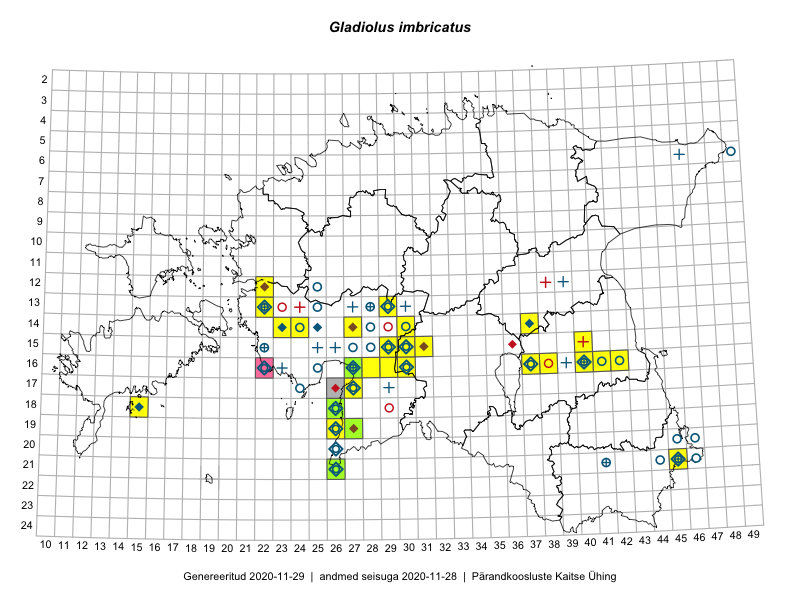

Gladiolus imbricatus
Uuendatud: 2016-12-01
Kaardile koondatud taksonid: Gladiolus imbricatus L.

Kaart põhineb 20 kirjel.
Viited andmebaasikirjetele
- Thea Kull: 2015-07-07: 16-40: ala
- Peedu Saar, Liina Oja: 2015-06-09: 17-27: GPS punkt
- Peedu Saar, Liina Oja: 2015-06-09: 17-27: ala
- Thea Kull: 2015-07-15: 16-40: GPS punkt
- Thea Kull: 2015-07-26: 16-40: GPS punkt
- Peedu Saar, Ott Luuk: 2015-09-02: 16-38: ala
- Peedu Saar, Ott Luuk: 2015-09-02: 16-38: GPS punkt
- Peedu Saar: 2015-06-22: 16-42: GPS punkt
- Meeli Mesipuu: 2015-07-15: 16-27: ala
- Peedu Saar: 2015-06-22: 16-42: ala
- Kirsi Loide, Marje Loide: 2015-08-10: 13-22: ala
- Kirsi Loide, Marje Loide: 2015-08-16T11:33Z: 13-22: GPS punkt
- Maret Gerz, Ott Luuk: 2014-06-25: 16-40: ala
- Thea Kull, Hannes Pehlak: 2016-07-20: 16-29: ala
- Maret Gerz, Aat Sarv: 2016-07-05: 13-22: GPS punkt
- Aat Sarv, Maret Gerz: 2016-07-05: 13-22: ala
- Kaire Lanno, Karin Kaljund: 2016-07-18: 15-40: ala
- Kaire Lanno, Karin Kaljund: 2016-07-18: 15-40: GPS punkt
- Sirje Azarov, Indrek Tammekänd: 2016-07-18: 21-26: ala
- Ott Luuk, Hannes Pehlak: 2016-07-18: 19-26: ala